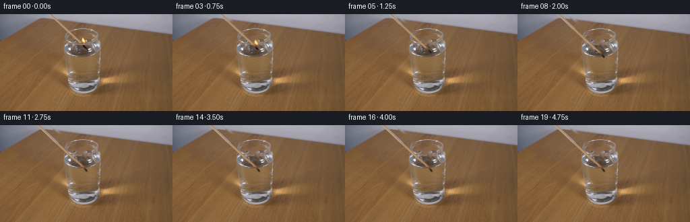
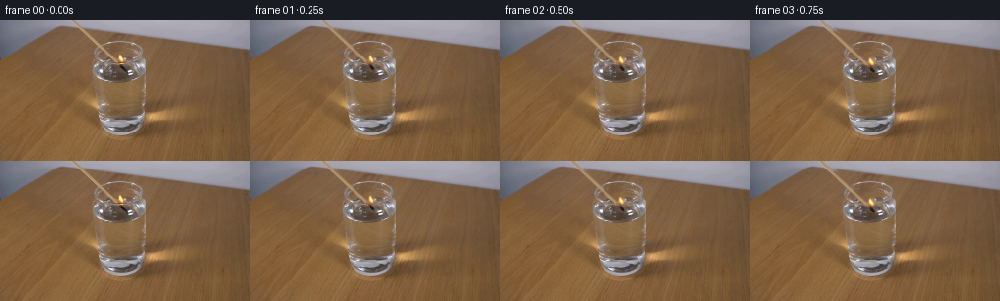

CODING AGENTS AS PIXEL WORLD MODELS
traex/GPT-6.1-Sol · 0111
点击播放 · 原生 RGB 像素
逐轮保存的候选
回放视频、检查图与代码变化。
每份候选均可单独播放。实际图片检查记录在下方工具轨迹中。
候选 01播放与检查图
点击播放 · 原生 RGB 像素

展开代码变化
--- 上一保存版本
+++ 本次保存版本
@@ -0,0 +1,198 @@
+from pathlib import Path
+import numpy as np
+from PIL import Image
+import cv2
+from scipy.ndimage import gaussian_filter
+import artifact_io
+
+ROOT = Path(__file__).resolve().parent
+H, W = 144, 256
+Y, X = np.mgrid[0:H, 0:W].astype(np.float32)
+
+
+def background_and_sprites(image):
+ a = image.astype(np.float32)
+ center = 74.65 + 1.055 * Y
+ shaft_remove = (np.abs(X - center) < 3.9) & (Y <= 42)
+ # The original burning end and its short optical image in the water.
+ end_center = 120.1 + 1.04 * (Y - 42)
+ end_remove = (Y >= 42) & (Y <= 53) & (np.abs(X - end_center) < 3.1)
+ end_remove &= ~((Y >= 51) & (X >= 131))
+ flame_remove = (Y >= 34) & (Y <= 44) & (X >= 120) & (X <= 127)
+ mask = shaft_remove | end_remove | flame_remove
+ clean = cv2.inpaint(image, mask.astype(np.uint8)*255, 4, cv2.INPAINT_TELEA).astype(np.float32)
+ # Retain the small brilliant reflection on the front of the glass.
+ for yy in range(51,55):
+ for xx in range(131,135):
+ if image[yy,xx].mean() > 170:
+ clean[yy,xx] = image[yy,xx]
+ Image.fromarray(np.uint8(np.clip(clean,0,255))).save(ROOT/'.tmp'/'background.png')
+ # Recover the photographed wood as a premultiplied, antialiased layer.
+ alpha = np.clip(3.1-np.abs(X-center),0,1) * (Y <= 42)
+ premul = a-clean*(1-alpha[...,None])
+ premul = np.minimum(np.maximum(premul,0),255*alpha[...,None])
+ premul *= (alpha > 0)[...,None]
+ # Flame matte: chromatic emission, not a rectangular patch of the scene.
+ region = (Y >= 34)&(Y <= 42)&(X >= 120)&(X <= 127)
+ fa = np.clip((a[...,0]-clean[...,0])/np.maximum(255-clean[...,0],1),0,1) * region
+ fa[fa < .055] = 0
+ fp = a-clean*(1-fa[...,None])
+ fp = np.minimum(np.maximum(fp,0),255*fa[...,None])
+ fp *= (fa > 0)[...,None]
+ return clean, alpha.astype(np.float32), premul.astype(np.float32), fa.astype(np.float32), fp.astype(np.float32), mask
+
+
+def sample(array, xx, yy):
+ return cv2.remap(array, xx.astype(np.float32), yy.astype(np.float32), cv2.INTER_LINEAR,
+ borderMode=cv2.BORDER_CONSTANT, borderValue=0)
+
+
+def compose(im, color, alpha):
+ return im*(1-alpha[...,None]) + color
+
+
+def smoothstep(z):
+ z=np.clip(z,0,1)
+ return z*z*(3-2*z)
+
+
+def descent(t):
+ # An unhurried lowering motion that eases to rest with the end submerged.
+ return 19.0*smoothstep(t/2.9)
+
+
+def water_ripples(im, clean, t, contact_t):
+ age=t-contact_t
+ if age < 0 or age > 2.3:
+ return im
+ # The tiny disturbance of a match, not a splash: elliptically projected waves.
+ field=np.zeros((H,W),np.float32)
+ window=((X-121.4)/23.0)**2+((Y-51.0)/11.5)**2
+ inside=smoothstep((1-window)*5)
+ for lag, amplitude in [(0,1.0),(.23,.57),(.44,.27)]:
+ aa=age-lag
+ if aa < 0: continue
+ radius=1.0+10.4*aa
+ rho=np.sqrt((X-125.3)**2+((Y-51.5)/.40)**2+1e-6)
+ envelope=np.exp(-aa*1.65)*amplitude
+ field += envelope*np.exp(-((rho-radius)/.8)**2)
+ field -= .70*envelope*np.exp(-((rho-radius-1.0)/.9)**2)
+ field*=inside
+ # Refracted background and subdued silver rim of the capillary waves.
+ distorted=sample(clean, X+field*.16, Y+field*.30)
+ im += (distorted-clean)*np.minimum(np.abs(field)[...,None]*.7,.65)
+ im += field[...,None]*np.array([7.0,8.2,9.4],np.float32)
+ return im
+
+
+def burnt_end(xx, yy):
+ # Small charred terminal section continuous with the photographed splint.
+ ax,ay,bx,by = 119.65,41.8,125.2,48.7
+ vx,vy=bx-ax,by-ay
+ length=np.hypot(vx,vy)
+ u=((xx-ax)*vx+(yy-ay)*vy)/(length*length)
+ v=((xx-ax)*(-vy)+(yy-ay)*vx)/length
+ radius=1.23+.18*np.exp(-((u-.8)/.25)**2)
+ dist=np.hypot(v, np.maximum(np.maximum(-u,u-1),0)*length)
+ alpha=np.clip(radius+.5-dist,0,1)
+ depth=smoothstep((u+.01)/.81)
+ col=(np.array([151,103,64],np.float32)[None,None,:]*(1-depth[...,None])+
+ np.array([35,23,18],np.float32)[None,None,:]*depth[...,None])
+ texture=1.8*np.sin(xx*4.2+yy*2.8)+1.2*np.sin(yy*8.1-xx*3.6)
+ col += (texture+2*np.maximum(-v,0))[...,None]
+ return col*alpha[...,None],alpha
+
+
+def render(image, clean, shaft_alpha, shaft_pm, flame_alpha, flame_pm, mask, index):
+ t=index*.25
+ dy=descent(t)
+ dx=2.0*smoothstep(t/2.9)
+ # Imperceptible natural displacement while settling; no movement of the camera.
+ if t < 2.9:
+ dx += .17*np.sin(3.4*t)*smoothstep(t/.6)
+ im=clean.copy()
+ contact_t=1.16
+ im=water_ripples(im,clean,t,contact_t)
+ # Optical displacement below the horizontal water interface.
+ submerged=smoothstep((Y-51.3)/1.5)
+ ox=.9*submerged
+ sy=Y-dy
+ sx=X-dx-ox
+ sa=sample(shaft_alpha,sx,sy)
+ sp=sample(shaft_pm,sx,sy)
+ # Extend the same splint through the upper edge as the object moves downward.
+ above=sy < 0
+ if np.any(above):
+ c=74.65+1.055*sy
+ off=sx-c
+ aa=np.clip(3.1-np.abs(off),0,1)*above
+ # Top-edge measured colors and axial texture, extended without a visible seam.
+ profile=np.array([[164,161,172],[175,164,163],[193,167,142],
+ [171,146,111],[165,139,106],[165,142,118],
+ [166,159,166],[165,163,175]],np.float32)
+ coord=np.clip(off+3.35,0,7)
+ lo=np.floor(coord).astype(int); hi=np.minimum(lo+1,7)
+ cc=profile[lo]*(1-(coord-lo)[...,None])+profile[hi]*(coord-lo)[...,None]
+ cc += (.65*np.sin(sy*1.8))[...,None]
+ sp=np.where(above[...,None],cc*aa[...,None],sp)
+ sa=np.where(above,aa,sa)
+ # The transparent water reduces contrast slightly, but the wooden splint remains visible.
+ transparency=1-.20*submerged
+ sa*=transparency
+ sp*=transparency[...,None]
+ im=compose(im,sp,sa)
+ bp,ba=burnt_end(sx,sy)
+ bp*=transparency[...,None]; ba*=transparency
+ im=compose(im,bp,ba)
+
+ # Flames always rise in world coordinates, with small, rapid changes of shape.
+ # They collapse at the water surface and do not continue burning underwater.
+ alive=1.0-smoothstep((t-1.02)/.24)
+ if alive > 0:
+ height=(1+.09*np.sin(12.4*t)+.055*np.sin(23*t))*(.62+.38*alive)
+ width=1+.09*np.sin(18.2*t+.2)
+ base_x,base_y=124.25+dx,43.3+dy
+ yy=(Y-base_y)/height+43.3
+ lean=.38*np.sin(13.2*t)*np.clip((base_y-Y)/9,0,1)
+ xx=(X-base_x-lean)/width+124.25
+ fa=sample(flame_alpha,xx,yy)*alive
+ fp=sample(flame_pm,xx,yy)*alive
+ # A faint warm halo, localized to the burning head.
+ halo=np.exp(-(((X-base_x)/5.2)**2+((Y-(base_y-4))/6.2)**2))
+ im += halo[...,None]*np.array([4.8,1.8,.1],np.float32)*alive
+ im=compose(im,fp,fa)
+ # A minute ember at the junction of the charred splint and flame.
+ ember=np.exp(-(((X-(121.4+dx))/1.0)**2+((Y-(43.5+dy))/1.05)**2))
+ im += ember[...,None]*np.array([21,7,1],np.float32)*alive
+ # Brief wispy vapor at the instant of quenching, rather than continuing flame.
+ age=t-contact_t
+ if 0 < age < 1.05:
+ smoke=np.zeros((H,W),np.float32)
+ for k in range(3):
+ cy=50.7-9.5*age-2.2*k
+ cx=124.8+1.25*np.sin(age*4.5+k*.7)
+ smoke+=np.exp(-(((X-cx)/(1.0+age*1.6))**2+((Y-cy)/(2.0+age*1.8))**2))
+ smoke*=.025*np.sin(np.pi*age/1.05)
+ im=im*(1-smoke[...,None])+np.array([188,190,194],np.float32)*smoke[...,None]
+ # The fixed front lip of the cup lightly occludes the splint where appropriate.
+ front=((Y>=40)&(Y<=46)&(X>=98)&(X<=146))
+ bright=smoothstep((clean.mean(2)-145)/85)*front
+ coverage=np.clip(sa+ba,0,1)
+ occ=bright*coverage*.46
+ im=im*(1-occ[...,None])+clean*occ[...,None]
+ return np.uint8(np.clip(np.rint(im),0,255))
+
+
+def main():
+ (ROOT/'.tmp').mkdir(exist_ok=True)
+ image=np.array(Image.open(ROOT/'first_frame.png').convert('RGB'),dtype=np.uint8)
+ clean,sa,sp,fa,fp,mask=background_and_sprites(image)
+ frames=[image.copy()]
+ for i in range(1,20):
+ frames.append(render(image,clean,sa,sp,fa,fp,mask,i))
+ frames=np.stack(frames).astype(np.uint8)
+ np.save(ROOT/'.tmp'/'candidate.npy',frames)
+ artifact_io.save(frames,ROOT)
+
+if __name__=='__main__':
+ main()
候选 02播放与检查图
点击播放 · 原生 RGB 像素


展开代码变化
--- 上一保存版本
+++ 本次保存版本
@@ -2,7 +2,6 @@
import numpy as np
from PIL import Image
import cv2
-from scipy.ndimage import gaussian_filter
import artifact_io
ROOT = Path(__file__).resolve().parent
@@ -112,7 +111,8 @@
dx += .17*np.sin(3.4*t)*smoothstep(t/.6)
im=clean.copy()
contact_t=1.16
- im=water_ripples(im,clean,t,contact_t)
+ # The end first touches the water before the wetting front reaches the flame.
+ im=water_ripples(im,clean,t,.72)
# Optical displacement below the horizontal water interface.
submerged=smoothstep((Y-51.3)/1.5)
ox=.9*submerged
可观测工具轨迹
实际执行的命令与返回图片。
命令 1exit 0
/bin/bash -lc 'ls -la && cat prompt.txt && cat GENERATION_RULES.md'
命令 2exit 0
/bin/bash -lc "cat artifact_io.py && python - <<'PY'
from PIL import Image
import numpy as np
im=np.array(Image.open('first_frame.png').convert('RGB'))
print(im.shape)
# color-luminance ascii
im=np.array(Image.fromarray(im).resize((128,72)))
chars=' .,:;irsXA253hMHGS#9B&@'
y=im.mean(2)
for row in y: print(''.join(chars[int(v/256*len(chars))] for v in row))
PY"命令 3exit 0
/bin/bash -lc "python - <<'PY'
from PIL import Image
import numpy as np
im=np.array(Image.open('first_frame.png'))
for y in range(0,144,4):
s=''
for x in range(0,256,2):
r,g,b=im[y:y+4,x:x+2,:3].mean((0,1))
if r>g*1.6 and r>b*1.8: c='R'
elif r>g*1.25 and r>b*1.4:c='o'
elif r>g*1.12 and r>b*1.2: c='t'
elif b>r*1.12 and b>g*1.05:c='b'
elif r>185 and g>185 and b>185: c='W'
elif max(r,g,b)-min(r,g,b)<15: c=' ' if r<110 else '.'
else:c='-'
s+=c
print(f'{y:3d} '+s)
print('reddest points')
r,g,b=[im[:,:,i].astype(float) for i in range(3)]
score=r-g
for idx in np.argsort(score.ravel())[-35:]:
y,x=np.unravel_index(idx,score.shape);print(x,y,im[y,x])
PY"命令 4exit 0
/bin/bash -lc "python - <<'PY'
from PIL import Image
import numpy as np
im=np.array(Image.open('first_frame.png').convert('RGB'))
# crop glass/stick; luminance one pixel ascii
cs=' .,:;irsXA253hMHGS#9B&@'
y=im.mean(2)
print('--- x65..154,y0..69 ---')
print(' '+''.join(str((i//10)%10) for i in range(65,155)))
print(' '+''.join(str(i%10) for i in range(65,155)))
for j in range(0,70):print(f'{j:2d} '+''.join(cs[int(v/256*len(cs))] for v in y[j,65:155]))
print('--- colors at x105..134,y26..50 ---')
# print each pixel R intensity - B encodes flame
for j in range(22,50):
print(f'{j:2d} '+ ' '.join(f'{im[j,i,0]-int(im[j,i,2]):3d}' for i in range(103,136)))
print('--- major top colors ---')
for j in [0,5,10,15,20,25,30,35,40,45,50,60,65,75,85,95,100,110,120]:
print(j,[(i,im[j,i].tolist()) for i in [70,75,80,85,90,95,100,105,110,115,120,125,130,135,140,145,150]])
PY"命令 5exit 0
/bin/bash -lc "python - <<'PY'
import numpy as np
from PIL import Image
im=np.array(Image.open('first_frame.png'))
for y in range(0,47):
x=74+1.07*y
print(y,round(x,1),[(i,tuple(im[y,i])) for i in range(round(x)-3,round(x)+5)])
print('FLAME')
for y in range(33,48):
print(y,[(x,tuple(im[y,x])) for x in range(118,129)])
PY"命令 6exit 0
/bin/bash -lc "python - <<'PY'
import numpy as np
from PIL import Image
im=np.asarray(Image.open('first_frame.png')).astype(float)
for y in range(18,119):
print('%3d'%y,' '.join('%3d'%int(v) for v in im[y,90:151].mean(1)[::2]))
PY"命令 7exit 0
/bin/bash -lc "python - <<'PY'
import numpy as np
from PIL import Image
im=np.array(Image.open('first_frame.png')).astype(float)
cs=' .,:;irsXA253hMHGS#9B&@'
for j in range(32,66):
print(f'{j:2d} '+''.join(cs[int(v/256*len(cs))] for v in im[j,95:149].mean(1)))
import importlib.util
for m in ['cv2','scipy']: print(m, bool(importlib.util.find_spec(m)))
PY"命令 8exit 0
/bin/bash -lc "python - <<'PY'
import numpy as np
from PIL import Image
im=np.array(Image.open('first_frame.png')).astype(float)
for y in range(0,44):
a,b=round(72+1.06*y),round(79+1.06*y)
sc=im[y,a:b,0]-im[y,a:b,2]
print(y,a+np.argmax(sc),round(float(sc.max()),1))
PY"命令 9exit 0
/bin/bash -lc "python - <<'PY'
import numpy as np
from PIL import Image
im=np.array(Image.open('first_frame.png'))
for y in [0,10,20,30,35,40,41,42,43,44,45,46,47,48,49,50,51,52,53,54]:
print(y, ' '.join(f'{x}:{im[y,x,0]},{im[y,x,1]},{im[y,x,2]}' for x in range(113 if y>=35 else max(0,round(74+1.06*y)-5),132 if y>=35 else round(74+1.06*y)+6)))
PY"命令 10exit 0
/bin/bash -lc "cat > .tmp/analyze.py <<'PY'
from PIL import Image
import numpy as np,cv2
im=np.array(Image.open('first_frame.png').convert('RGB'));h,w=im.shape[:2]
y,x=np.mgrid[:h,:w]
c=74.8+1.055*y
mask=((abs(x-c)<4.0)&(y<=43))
mask|=((y>=43)&(y<=54)&(abs(x-(121.2+1.05*(y-43)))<3.5))
mask|=((x>=120)&(x<=128)&(y>=34)&(y<=44))
bg=cv2.inpaint(im,mask.astype('uint8')*255,4,cv2.INPAINT_TELEA)
Image.fromarray(bg).save('.tmp/clean.png')
cs=' .,:;irsXA253hMHGS#9B&@'
for j in range(18,66):
print(f'{j:2d} '+''.join(cs[int(v/256*len(cs))] for v in bg[j,90:151].mean(1)))
PY
python .tmp/analyze.py"命令 11exit 0
/bin/bash -lc "cat > generate.py <<'PY'
from pathlib import Path
import numpy as np
from PIL import Image
import cv2
from scipy.ndimage import gaussian_filter
import artifact_io
ROOT = Path(__file__).resolve().parent
H, W = 144, 256
Y, X = np.mgrid[0:H, 0:W].astype(np.float32)
def background_and_sprites(image):
a = image.astype(np.float32)
center = 74.65 + 1.055 * Y
shaft_remove = (np.abs(X - center) < 3.9) & (Y <= 42)
# The original burning end and its short optical image in the water.
end_center = 120.1 + 1.04 * (Y - 42)
end_remove = (Y >= 42) & (Y <= 53) & (np.abs(X - end_center) < 3.1)
end_remove &= ~((Y >= 51) & (X >= 131))
flame_remove = (Y >= 34) & (Y <= 44) & (X >= 120) & (X <= 127)
mask = shaft_remove | end_remove | flame_remove
clean = cv2.inpaint(image, mask.astype(np.uint8)*255, 4, cv2.INPAINT_TELEA).astype(np.float32)
# Retain the small brilliant reflection on the front of the glass.
for yy in range(51,55):
for xx in range(131,135):
if image[yy,xx].mean() > 170:
clean[yy,xx] = image[yy,xx]
Image.fromarray(np.uint8(np.clip(clean,0,255))).save(ROOT/'.tmp'/'background.png')
# Recover the photographed wood as a premultiplied, antialiased layer.
alpha = np.clip(3.1-np.abs(X-center),0,1) * (Y <= 42)
premul = a-clean*(1-alpha[...,None])
premul = np.minimum(np.maximum(premul,0),255*alpha[...,None])
premul *= (alpha > 0)[...,None]
# Flame matte: chromatic emission, not a rectangular patch of the scene.
region = (Y >= 34)&(Y <= 42)&(X >= 120)&(X <= 127)
fa = np.clip((a[...,0]-clean[...,0])/np.maximum(255-clean[...,0],1),0,1) * region
fa[fa < .055] = 0
fp = a-clean*(1-fa[...,None])
fp = np.minimum(np.maximum(fp,0),255*fa[...,None])
fp *= (fa > 0)[...,None]
return clean, alpha.astype(np.float32), premul.astype(np.float32), fa.astype(np.float32), fp.astype(np.float32), mask
def sample(array, xx, yy):
return cv2.remap(array, xx.astype(np.float32), yy.astype(np.float32), cv2.INTER_LINEAR,
borderMode=cv2.BORDER_CONSTANT, borderValue=0)
def compose(im, color, alpha):
return im*(1-alpha[...,None]) + color
def smoothstep(z):
z=np.clip(z,0,1)
return z*z*(3-2*z)
def descent(t):
# An unhurried lowering motion that eases to rest with the end submerged.
return 19.0*smoothstep(t/2.9)
def water_ripples(im, clean, t, contact_t):
age=t-contact_t
if age < 0 or age > 2.3:
return im
# The tiny disturbance of a match, not a splash: elliptically projected waves.
field=np.zeros((H,W),np.float32)
window=((X-121.4)/23.0)**2+((Y-51.0)/11.5)**2
inside=smoothstep((1-window)*5)
for lag, amplitude in [(0,1.0),(.23,.57),(.44,.27)]:
aa=age-lag
if aa < 0: continue
radius=1.0+10.4*aa
rho=np.sqrt((X-125.3)**2+((Y-51.5)/.40)**2+1e-6)
envelope=np.exp(-aa*1.65)*amplitude
field += envelope*np.exp(-((rho-radius)/.8)**2)
field -= .70*envelope*np.exp(-((rho-radius-1.0)/.9)**2)
field*=inside
# Refracted background and subdued silver rim of the capillary waves.
distorted=sample(clean, X+field*.16, Y+field*.30)
im += (distorted-clean)*np.minimum(np.abs(field)[...,None]*.7,.65)
im += field[...,None]*np.array([7.0,8.2,9.4],np.float32)
return im
def burnt_end(xx, yy):
# Small charred terminal section continuous with the photographed splint.
ax,ay,bx,by = 119.65,41.8,125.2,48.7
vx,vy=bx-ax,by-ay
length=np.hypot(vx,vy)
u=((xx-ax)*vx+(yy-ay)*vy)/(length*length)
v=((xx-ax)*(-vy)+(yy-ay)*vx)/length
radius=1.23+.18*np.exp(-((u-.8)/.25)**2)
dist=np.hypot(v, np.maximum(np.maximum(-u,u-1),0)*length)
alpha=np.clip(radius+.5-dist,0,1)
depth=smoothstep((u+.01)/.81)
col=(np.array([151,103,64],np.float32)[None,None,:]*(1-depth[...,None])+
np.array([35,23,18],np.float32)[None,None,:]*depth[...,None])
texture=1.8*np.sin(xx*4.2+yy*2.8)+1.2*np.sin(yy*8.1-xx*3.6)
col += (texture+2*np.maximum(-v,0))[...,None]
return col*alpha[...,None],alpha
def render(image, clean, shaft_alpha, shaft_pm, flame_alpha, flame_pm, mask, index):
t=index*.25
dy=descent(t)
dx=2.0*smoothstep(t/2.9)
# Imperceptible natural displacement while settling; no movement of the camera.
if t < 2.9:
dx += .17*np.sin(3.4*t)*smoothstep(t/.6)
im=clean.copy()
contact_t=1.16
im=water_ripples(im,clean,t,contact_t)
# Optical displacement below the horizontal water interface.
submerged=smoothstep((Y-51.3)/1.5)
ox=.9*submerged
sy=Y-dy
sx=X-dx-ox
sa=sample(shaft_alpha,sx,sy)
sp=sample(shaft_pm,sx,sy)
# Extend the same splint through the upper edge as the object moves downward.
above=sy < 0
if np.any(above):
c=74.65+1.055*sy
off=sx-c
aa=np.clip(3.1-np.abs(off),0,1)*above
# Top-edge measured colors and axial texture, extended without a visible seam.
profile=np.array([[164,161,172],[175,164,163],[193,167,142],
[171,146,111],[165,139,106],[165,142,118],
[166,159,166],[165,163,175]],np.float32)
coord=np.clip(off+3.35,0,7)
lo=np.floor(coord).astype(int); hi=np.minimum(lo+1,7)
cc=profile[lo]*(1-(coord-lo)[...,None])+profile[hi]*(coord-lo)[...,None]
cc += (.65*np.sin(sy*1.8))[...,None]
sp=np.where(above[...,None],cc*aa[...,None],sp)
sa=np.where(above,aa,sa)
# The transparent water reduces contrast slightly, but the wooden splint remains visible.
transparency=1-.20*submerged
sa*=transparency
sp*=transparency[...,None]
im=compose(im,sp,sa)
bp,ba=burnt_end(sx,sy)
bp*=transparency[...,None]; ba*=transparency
im=compose(im,bp,ba)
# Flames always rise in world coordinates, with small, rapid changes of shape.
# They collapse at the water surface and do not continue burning underwater.
alive=1.0-smoothstep((t-1.02)/.24)
if alive > 0:
height=(1+.09*np.sin(12.4*t)+.055*np.sin(23*t))*(.62+.38*alive)
width=1+.09*np.sin(18.2*t+.2)
base_x,base_y=124.25+dx,43.3+dy
yy=(Y-base_y)/height+43.3
lean=.38*np.sin(13.2*t)*np.clip((base_y-Y)/9,0,1)
xx=(X-base_x-lean)/width+124.25
fa=sample(flame_alpha,xx,yy)*alive
fp=sample(flame_pm,xx,yy)*alive
# A faint warm halo, localized to the burning head.
halo=np.exp(-(((X-base_x)/5.2)**2+((Y-(base_y-4))/6.2)**2))
im += halo[...,None]*np.array([4.8,1.8,.1],np.float32)*alive
im=compose(im,fp,fa)
# A minute ember at the junction of the charred splint and flame.
ember=np.exp(-(((X-(121.4+dx))/1.0)**2+((Y-(43.5+dy))/1.05)**2))
im += ember[...,None]*np.array([21,7,1],np.float32)*alive
# Brief wispy vapor at the instant of quenching, rather than continuing flame.
age=t-contact_t
if 0 < age < 1.05:
smoke=np.zeros((H,W),np.float32)
for k in range(3):
cy=50.7-9.5*age-2.2*k
cx=124.8+1.25*np.sin(age*4.5+k*.7)
smoke+=np.exp(-(((X-cx)/(1.0+age*1.6))**2+((Y-cy)/(2.0+age*1.8))**2))
smoke*=.025*np.sin(np.pi*age/1.05)
im=im*(1-smoke[...,None])+np.array([188,190,194],np.float32)*smoke[...,None]
# The fixed front lip of the cup lightly occludes the splint where appropriate.
front=((Y>=40)&(Y<=46)&(X>=98)&(X<=146))
bright=smoothstep((clean.mean(2)-145)/85)*front
coverage=np.clip(sa+ba,0,1)
occ=bright*coverage*.46
im=im*(1-occ[...,None])+clean*occ[...,None]
return np.uint8(np.clip(np.rint(im),0,255))
def main():
(ROOT/'.tmp').mkdir(exist_ok=True)
image=np.array(Image.open(ROOT/'first_frame.png').convert('RGB'),dtype=np.uint8)
clean,sa,sp,fa,fp,mask=background_and_sprites(image)
frames=[image.copy()]
for i in range(1,20):
frames.append(render(image,clean,sa,sp,fa,fp,mask,i))
frames=np.stack(frames).astype(np.uint8)
np.save(ROOT/'.tmp'/'candidate.npy',frames)
artifact_io.save(frames,ROOT)
if __name__=='__main__':
main()
PY
python generate.py
python - <<'PY'
import numpy as np
f=np.load('.tmp/candidate.npy')
cs=' .,:;irsXA253hMHGS#9B&@'
for i in [0,1,3,5,9,13,19]:
print('\\nFRAME',i)
for y in range(20,74,2):
print('%2d'%y,''.join(cs[int(v/256*len(cs))] for v in f[i,y,85:150].mean(1)))
print('changes')
for i in range(20):
d=np.abs(f[i].astype(float)-f[0])
print(i, round(d.mean(),3),np.count_nonzero(d.max(2)>20))
PY"命令 12exit 0
/bin/bash -lc "python generate.py && python - <<'PY'
from PIL import Image
import numpy as np
from pathlib import Path
im=np.asarray(Image.open('first_frame.png').convert('RGB'))
f=np.load('.tmp/candidate.npy')
assert f.shape==(20,144,256,3) and f.dtype==np.uint8
assert np.array_equal(f[0],im)
p=np.load('pixels.npz')['pixels']
assert p.shape==(144,256,20)
print('Validated:',f.shape,f.dtype,'first frame identical')
print('Output:',Path('pixels.npz').stat().st_size,'bytes')
PY"保存候选 3 份；完成命令 12 次；可验证图片返回 0 张。原始 API 响应与完整日志保留在本地。